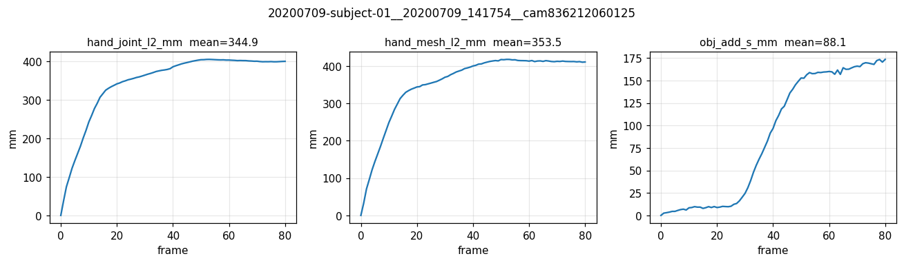
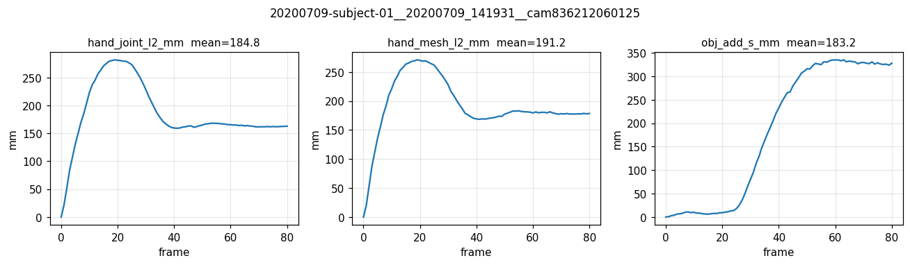
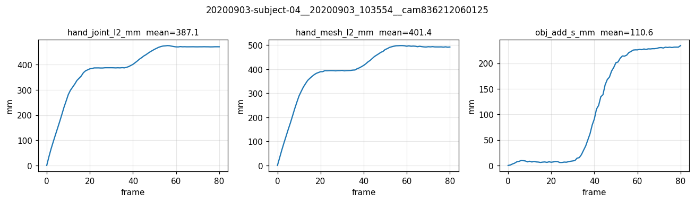
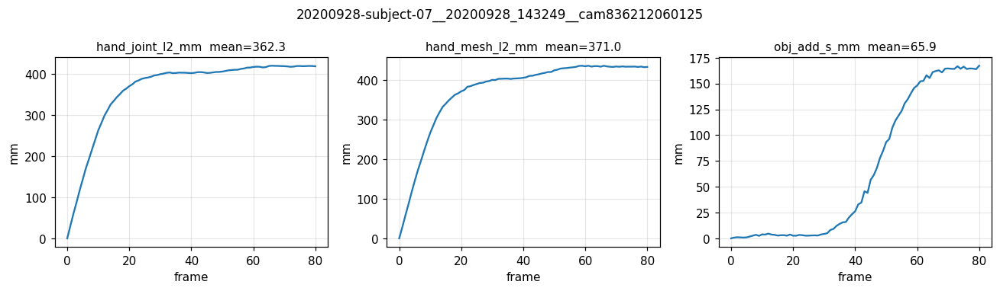
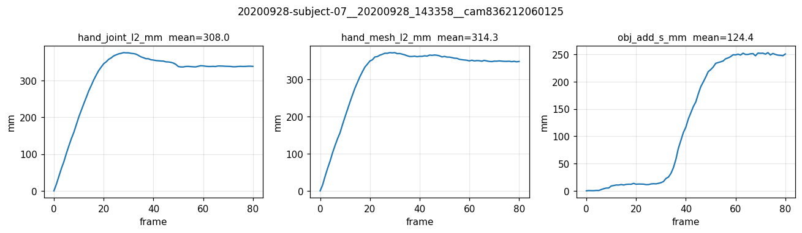
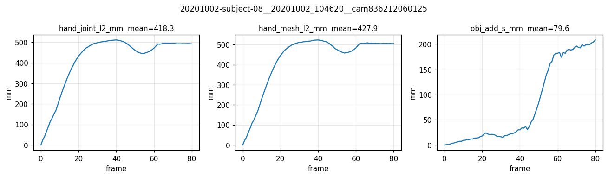

First arm-D (anatomical) training on the FULL DexYCB s1_train multi-camera set (6,400 entries; 8 subjects × 100 seqs × 8 cams). NLF-style M-agnostic mesh queries (random M=32 subset per step from 778 MANO verts). 8× H100, BS=1, 20k steps. Eval & visualize on 3 train + 3 test sequences.
| Task | Status | Commit | What landed |
|---|---|---|---|
| Phase 0 | PASS | scratch only | Built dexycb_s1_train_multicam.json (6,400) + dexycb_s1_test_multicam.json (1,600) by scanning is_hand_tracked per (seq, cam) |
| Phase 1 | PASS | 16 ACP shards (cam-1–7 of full s1) | Wan2.2 VAE precompute extended from cam-125 (1,000) to all 8 cams (8,000). Workspace quota hit; final 7 shards landed via fast-poll retry. |
| Phase 2 | PASS | 16 CPU-template ACP shards | Multi-cam GT cache built. Filename schema migrated to <seq>__cam<cam>.gt.pt (camera-suffixed; mirrors VAE). |
| Phase 3 | PASS | pt-ai6maj5f | arm-D anatomical 20k-step train. final.pt + ckpts at 5k/10k/15k. Loss total 1.43→1.00; obj add_s 0.82→0.18. |
| Eval | PASS | eval_pick6/ | Cached-only eval driver (no live MANO) on 3 train + 3 test (M_eval=778 chunked@128). predictions.pt + per-frame metrics. |
| Viz | PASS | eval_pick6_viz/ | Per-sequence: 3D scatter MP4, camera-overlay MP4, interactive Plotly HTML, per-frame metric chart. |
Trained at M=32 random subset per step; eval at M=778 chunked@128 produces stable joint/obj predictions across M (≤1 mm difference between M=32 and M=778 eval). The bank's TokenMLP(GPS)/RoPE-MLP(GPS,time) parameterization correctly generalizes to arbitrary canonical-vertex query sets at inference.
Loss curve shows joint loss settled at ≈0.19 (≈194 mm L1 per axis) and never improved further across 20k steps. Frame-0-relative L2 on training-distribution data ranges 185–387 mm across the 3 train picks; OOT 308–418 mm. Per-frame error grows from 0 mm at frame-0 to ~400 mm by frame 60 — the model fits the start of each clip via anchoring but does not predict per-frame motion. Recipe almost certainly needs lower LR or much longer training.
Train picks (subject-01/04) had obj_rot 7–9°; test picks (subject-07/08) had 29–42°. The model learned object rotation from seen subjects but does not transfer well. Add-S and translation gaps are smaller (in-train 88–183 mm vs OOT 60–124 mm — actually slightly favors OOT, dominated by per-sequence variance over the 3-sequence sample).
Removed live-MANO via DexYCB16FrameClip (was the per-frame 270 ms/frame culprit). New driver uses DexYCBGTCachedClip with explicit frame_indices override. Schema now (seq, cam) keyed, no MANO forward at eval time.
| Aspect | Current state |
|---|---|
| branch | feat/dcf @ 9b1a5f5 (uncommitted patches in worktree: bank refactor, slot patch, save-every, eval cached migration) |
| VAE cache | /mnt/afs/haonan/hoi3r/cache/wan22_vae_dexycb_full/ 8000 files, 8 cams × 1000 seqs |
| GT cache | /mnt/afs/haonan/hoi3r/cache/hoi3r_v2_gt_multiseq/ 8000 files, <seq>__cam<cam>.gt.pt schema |
| arm-D ckpt | logs/v2ablate/full_dexycb_armD/seed0/ final.pt + ckpt_step{5000,10000,15000}.pt (each ~250 MB, trainable filter only) |
| Task | Priority | What's needed |
|---|---|---|
| P0-armD-retrain | P0 | Re-train arm-D with adjusted LR (try sqrt(8)× = 2.8e-4 to compensate for the 2× effective-batch increase from anchor) AND/OR longer schedule (40–60k steps). Current 20k @ 1e-4 plateaus at joint loss 0.19 with no further descent. Goal: bring joint L2 below 50 mm in-train as a meaningful baseline. |
| P1-eval-full-test | P1 | Full-set eval on all 1,600 s1_test_multicam entries (current eval is 6 hand-picked). Get distribution-level OOT numbers. |
| P2-trajectory-eval | P2 | Eval the 3 intermediate ckpts (5k/10k/15k) on the same 6-pick set to confirm: did training plateau early, or was loss still improving at 20k? |
project_armD_full_dexycb_20k_results.mdfeedback_armD_recipe_underconverges.md





Paste this into a new Claude Code session:
Read https://haonanhe.github.io/HOI3R-project-tracking/updates/2026-05-01-session-summary-armD-full-dexycb-multicam-20k.json and continue from tasks_pending[0] (P0-armD-retrain [P0]: Re-train arm-D with adjusted LR (try sqrt(8)× = 2.8e-4 to compensate for the 2× effective-batch increase from anchor) AND/OR longer schedule (40–60k steps). Current 20k @ 1e-4 plateaus at joint loss 0.19 with no further descent. Goal: bring joint L2 below 50 mm in-train as a meaningful baseline.). Context: branch feat/dcf@9b1a5f5; worktree /mnt/afs/haonan/hoi3r/HOI3R/.worktrees/feat-dcf.